— Selamat Datang di Shift Malam —
Menyelami teori, kasus, dan misteri yang tersembunyi di balik lapisan realita yang kita kenal.
Jelajahi KasusKumpulan kasus, teori, dan insiden yang menggugah rasa ingin tahu.
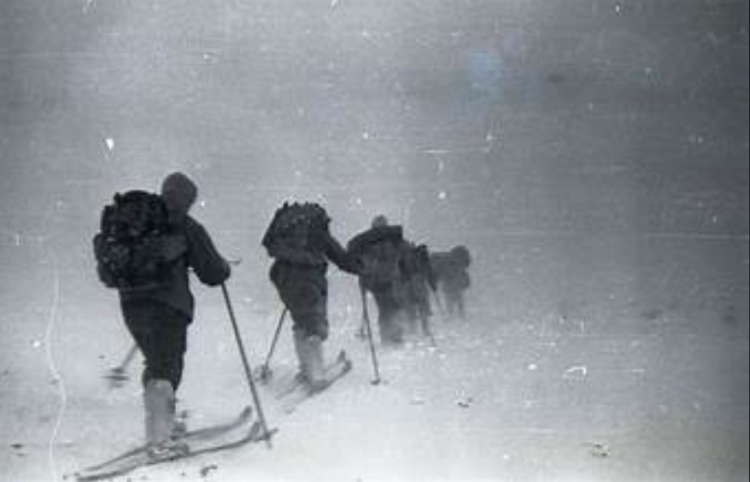
1959, sembilan pendaki ditemukan tewas dalam kondisi misterius di Pegunungan Ural. Penyelidikan resmi menyebut "kekuatan tak dikenal".
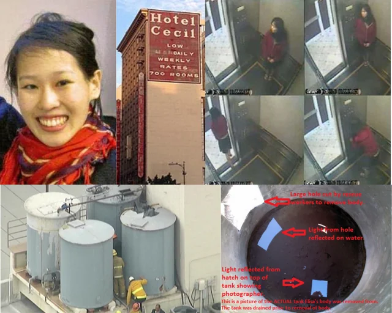
Hotel Cecil jadi lokasi kematian misterius Elisa Lam. Video CCTV lift yang aneh dan tangki air tertutup rapat menyisakan tanda tanya besar.
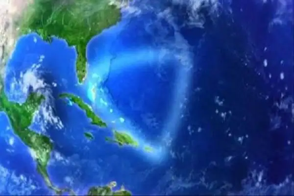
Zona hilang paling terkenal di dunia. Ratusan kapal dan pesawat, termasuk Flight 19, lenyap tanpa jejak di kawasan ini.
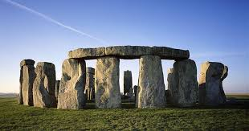
Monumen megalitikum yang dibangun ribuan tahun sebelum masehi. Bagaimana manusia purba memindahkan batu 25 ton tanpa teknologi modern?
London 1888. Pembunuh misterius memutilasi korban dengan presisi bedah, mengirim surat ejekan ke polisi, dan tidak pernah tertangkap hingga hari ini.
Penerbang wanita paling terkenal di dunia lenyap di atas Samudra Pasifik saat mencoba mengelilingi bumi. Pesawatnya tidak pernah ditemukan.
Overdosis, bunuh diri, atau pembunuhan terencana? Keterlibatan Kennedy bersaudara dan laporan otopsi yang hilang membuat kasus ini tak pernah benar-benar tutup.
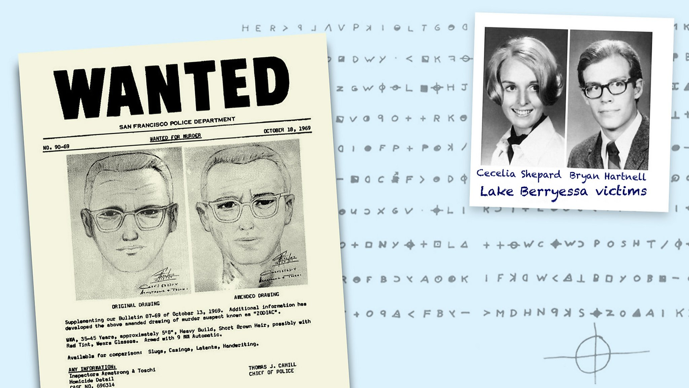
Pembunuh California yang mengirim kriptogram ke koran untuk menantang polisi. Kode keempatnya baru terpecahkan setelah 51 tahun — dan masih tidak mengungkap siapa dia.
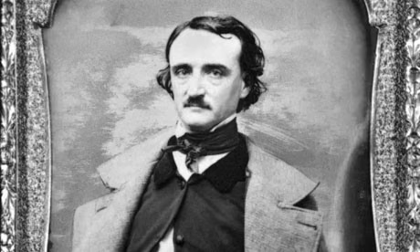
Penulis horor terbesar meninggal dengan cara sepaling misterius dari semua ceritanya sendiri — ditemukan memakai baju orang lain, memanggil nama yang tidak dikenal siapapun.
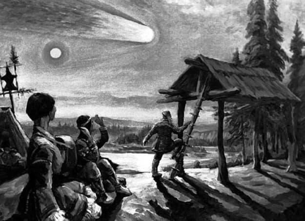
Ledakan 1000 kali lebih kuat dari bom Hiroshima meratakan 2.150 km² hutan Siberia — namun tidak meninggalkan satu pun kawah di tanah.
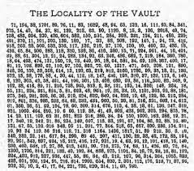
Tiga lembar angka misterius yang diklaim menyimpan lokasi harta karun senilai triliunan rupiah. Dua dari tiga kodenya belum pernah terpecahkan selama 200 tahun.
Skeptisisme radikal terhadap sains modern. Komunitas Bumi Datar percaya Antartika hanyalah dinding es raksasa yang menyembunyikan ujung dunia.
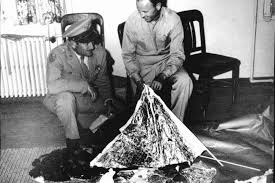
Militer Amerika sempat mengumumkan penemuan piring terbang di New Mexico sebelum pernyataan itu ditarik dalam hitungan jam. Apa yang sebenarnya jatuh?
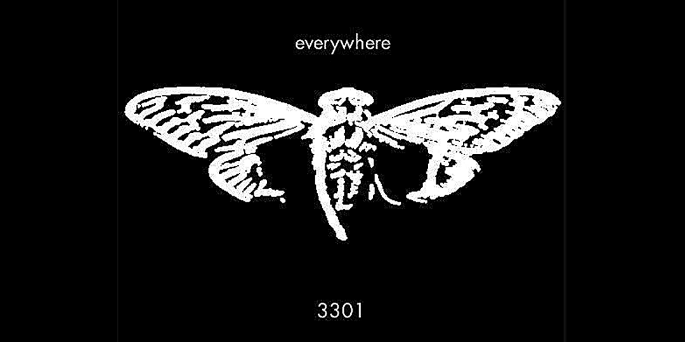
Teka-teki internet paling kompleks yang pernah ada. Melibatkan steganografi, koordinat GPS dunia nyata, dan para peserta yang menang tidak pernah terdengar lagi.
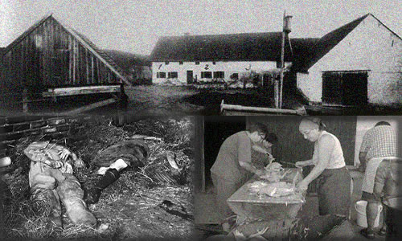
Seluruh keluarga dibantai di peternakan terpencil Jerman. Yang lebih mengerikan: pelaku tinggal di loteng rumah mereka selama berhari-hari sebelum beraksi.
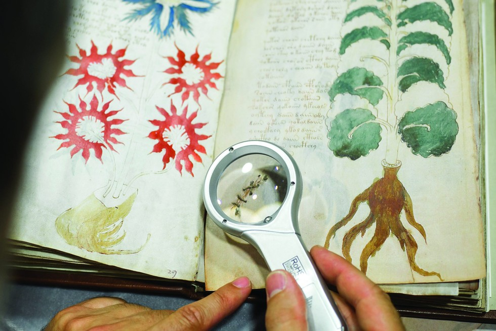
Buku abad ke-15 yang ditulis dalam bahasa yang tidak dikenal siapapun di bumi. Pemecah kode terbaik dunia, termasuk dari NSA, semua gagal membacanya.
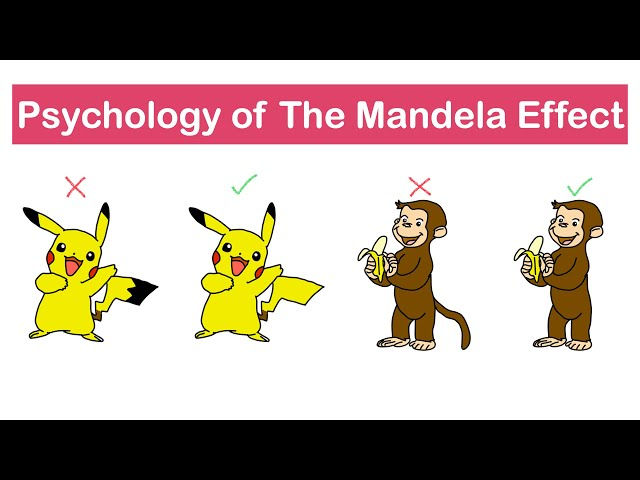
Jutaan orang di seluruh dunia memiliki ingatan kolektif yang sama tentang sesuatu yang tidak pernah terjadi. Kesalahan memori massal, atau kita pernah berpindah timeline?
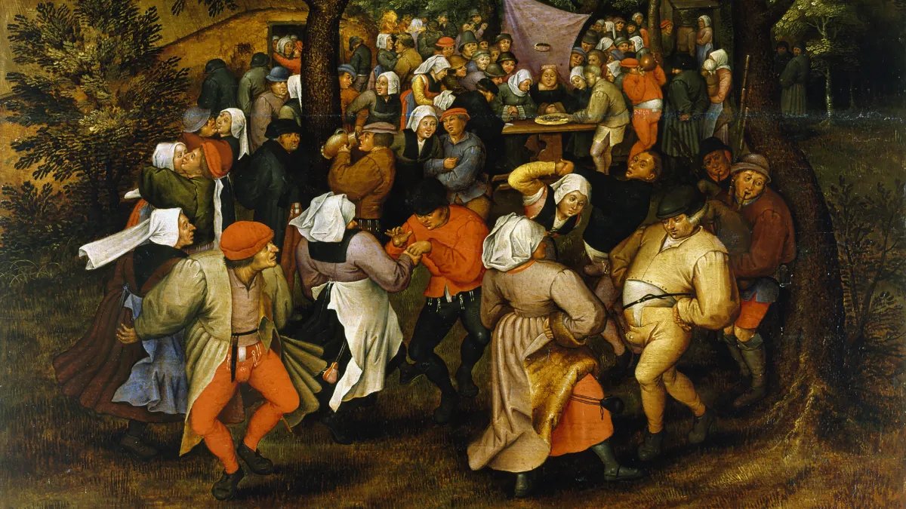
Strasbourg 1518: ratusan orang menari tanpa henti selama berminggu-minggu hingga banyak yang meninggal kelelahan. Tidak ada yang tahu mengapa mereka tidak bisa berhenti.
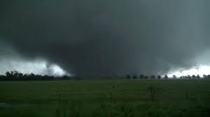
bencana angin puting beliung dahsyat berkekuatan EF-5 yang menghantam kota Joplin, Missouri, AS, pada 22 Mei 2011.
pesawat Malaysia Airlines MH370 menghilang dari radar saat perjalanan dari Kuala Lumpur ke Beijing. Kontak terakhir terdengar normal, tanpa tanda bahaya.
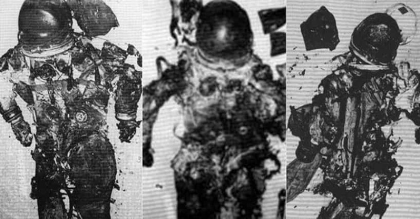
peluncuran berawak manusia dalam Program Apollo. Namun, misi ini gagal terbang setelah ketiga kru utama dalam misi ini tewas pada saat kebakaran modul
Kasus "Frog boys" merujuk pada hilangnya dan pembunuhan lima anak laki-laki di Daegu, Korea Selatan pada tahun 1991, yang hilang saat mencari telur salamander (awalnya dikira telur katak) di Gunung Waryong. Jasad mereka ditemukan 11 tahun kemudian pada tahun 2002 dengan bukti kekerasan, menjadikannya salah satu kasus pembunuhan yang belum terpecahkan paling terkenal di Korea Selatan.
Shift Malam adalah ruang untuk mereka yang tidak puas dengan jawaban permukaan. Kami mengumpulkan, merangkum, dan membahas kasus-kasus yang tersembunyi, teori yang dianggap gila, dan misteri yang belum terpecahkan.
Kami bukan menyebarkan hoaks — kami mengajak kamu untuk berpikir lebih dalam dan mempertanyakan apa yang ada di balik narasi utama.
"Rahasia terbesar bukan yang tersembunyi — tapi yang ada di depan mata namun tidak ada yang mau lihat."
Punya kasus yang ingin dibahas? Temukan sesuatu yang mencurigakan? Atau sekadar ingin berdiskusi? Tulis pesanmu di sini.
📁 Kirim laporan kasus
💡 Usul topik baru
🤝 Kolaborasi konten